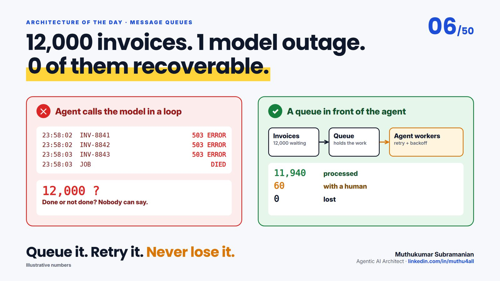

The Model API Went Down at Month-End. Where Did 12,000 Invoices Go?
By Muthukumar Subramanian · Agentic AI Architect

It's the last working day of the month. Your invoice agent is flying through vendor bills, and the finance team has finally stopped working late.
At 11:58 PM the model API starts returning errors.
By the time someone wakes up, the job has died halfway. Which invoices went through? Which didn't? Did any get half-posted to the ERP? Nobody can say, because the only record of the work was in the memory of a process that no longer exists.
Twelve thousand invoices (illustrative), and the honest answer is "let's start again and check for duplicates".
Here's my contrarian take: your AI agent doesn't have a model problem. It has a waiting problem. It has no way to say "not now, I'll do this later".
The architecture today
Message queues are one of the oldest ideas in enterprise IT. Your bank, your payroll and your ERP have run on them for decades. A producer drops a message on a queue, a consumer picks it up when it's ready, and the message stays put until the work is confirmed. Pub/sub is the same idea with many subscribers listening to one topic.
The two sides don't need to be up at the same time. That one property is why batch payroll still runs after a server reboot.
Then AI arrived, and many teams wrote this instead: a loop that calls the model directly, invoice after invoice, and hopes.
👉 [IMAGE: A-day06-2-in-article-architecture.png]
Caption: A queue in front of the agent. Nothing is lost when the model isn't there. Grey is what you already have. Amber is new.
Where AI plugs in now: put a queue in front of the agent
You don't need a new platform. You probably run a queue already. The first, low-risk move is to stop calling the model from a loop:
→ Every invoice becomes a message. It stays on the queue until an agent worker confirms it's done. If a worker dies, the message comes back.
→ Retries with backoff. When the API fails or rate-limits you, wait 2 seconds, then 4, then 8. Month-end traffic is exactly when you hit the limits.
→ A dead-letter queue for humans. After a few failed attempts, the invoice stops retrying and lands in a list for a person. A blurry scan shouldn't block 11,000 clean ones.
→ Idempotent workers. Yesterday's lesson again: queues can deliver a message twice, so posting to the ERP must check an invoice key first.
→ A batch lane for work that can wait. OpenAI and Anthropic both advertise batch APIs at 50% off with a 24-hour window. Overnight reconciliation doesn't need a live answer at live prices.
And keep the rule from earlier in this series: the model reads the invoice, and plain code does the posting.
Where it's heading with agents
Today the queue protects the agent. In two or three years, I expect the queue to become how agents work with each other.
A multi-step agent job (read the invoice, match the PO, check GST, seek approval) won't run as one long call that can die at step three. Each step will be a message, so the job can pause for a week waiting for a manager's approval and pick up exactly where it stopped. Long-running agents need a place to wait, and queues are that place.
The dead-letter queue changes too. It stops being an error bin and becomes the agent's inbox for humans: "I couldn't do these 60, here's why." That list is the most honest report any agent will ever give you.
It also needs an owner, and that's creating new jobs. A forward deployed engineer (FDE) is an engineer who sits with the customer's team and ships the agent on their real systems. The title started at Palantir, and it's the person who learns at month-end how the invoice run really works, including the vendor who always sends scanned PDFs at 11 PM. Once the agent is live, someone has to own that list of 60 every morning. Some companies call that person an AgentOps engineer. The titles are still settling, but the work isn't going away.
👉 [IMAGE: A-day06-3-in-article-failure-table.png]
Caption: Five failures that happen at month-end, with and without a queue.
Watch it work
An outage hits at the worst moment. Watch the queue hold the work, and watch what happens when the API comes back.
👉 [GIF: A-day06-4-in-article-outage-drain.gif]
Caption: The model goes down, invoices wait, retries drain the queue, and 60 land with a human. Nothing is lost.
Pros
→ An outage becomes a delay instead of a loss
→ You control the pace, so rate limits stop being a crisis and overnight work can go to cheaper batch lanes
→ Every invoice has a state: waiting, done, or with a human. Finance can finally get an answer
Cons
→ It isn't real-time. A customer chatting with an agent can't wait in a queue for an hour, so this suits back-office work best
→ You now run retries, duplicates and message ordering, and each one has bitten every queue team at some point
→ A neglected dead-letter queue is a silent failure. If nobody owns it, those 60 invoices stay unpaid until the vendor calls
The opportunity
Every company putting agents into finance, claims or KYC will learn this at its first month-end. Most of them won't want to build it themselves.
That's the market: AI job orchestration. Platforms that handle queues, retries, dead-letter review screens and batch routing for agent workloads, with a live view of every job's state. For integrators, "make your agent survive month-end" is a clean, fixed-scope engagement, delivered by FDEs on the customer's own systems. The buyer is the CFO who has already been burned once, and the pitch writes itself: not one invoice lost, and a smaller bill for the work that can wait.
If you're an engineer who knows queues and has lived through a month-end close, that's a real career opening. Indeed's data, reported in the Indian press, shows FDE postings in India rose nearly 19-fold from June 2025 to June 2026. That's a fast rise from a small base, not a guarantee, but people who can make an agent survive real operations are getting noticed.
Tools to try
Amazon SQS for a managed queue with built-in dead-letter queues · RabbitMQ if you want to run your own · Azure Service Bus or Google Cloud Pub/Sub on those clouds · the OpenAI and Anthropic batch APIs for overnight work.
Your turn 👇
At your next month-end, would you rather have a fast agent or a recoverable one? Pick one.
Tag the person in finance who'd get the call when 12,000 invoices go missing.
Day 6 of 50 · follow along. Tomorrow: one AI agent, one bad loop, ₹6 lakh gone by morning. The API gateway, rebuilt for agents.